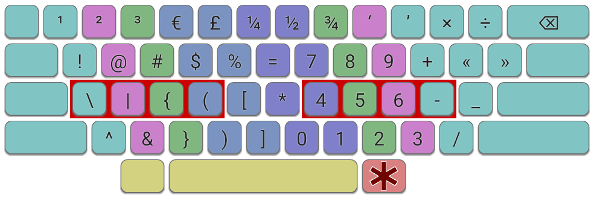
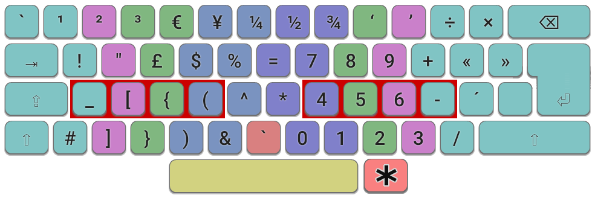

A Symbols Layer provides a set of improved mappings for commonly typed non-alphabetic characters. A common use case is for software developers, whose programming languages often require the use of characters such as brackets, underscores and mathematical symbols. However, as such a layer is customizable, it may feature digits, accented characters, or other specialist symbols according to the user's requirements.
( ) { } [ ] _ & | = * + -
On a standard keyboard, many symbols are difficult to type efficiently, especially those located on keys in the top-right corner.
The Symbols Layer is activated by holding down a modifier key, typically AltGr (Right Alt). The characters can then by typed using much easier to reach keys, such as home-row or other easy-access keys. Although this means two keys are required, the use of the right thumb for AltGr means such symbols can be typed faster and more comfortably than reaching for a single key in the corners of the keyboard.

A Symbols Layer on an ANSI keyboard, activated with RightAlt, provides brackets and punctuation characters on the left, plus a numeric keypad and mathematical symbols on the right.
The concept is similar to the Extend Layer but here we are concerned with typing printable symbols, rather than the Extend Layer's focus on navigation and editing functions. A Symbols layer is complementary to Extend and the layers can work well together. For suggestions on how to set up modifier keys to support them, see the Modifiers page.
The use of layers in this way makes it possible to implement the ‘1u principle’ : that any commonly typed key should be accessible at no more than 1 key-unit distance from the home position. This is necessary for smaller (40%) boards, but can be a worthwhile objective on any keyboard.

A Symbols Layer on an ISO keyboard with Angle Mod and GB mappings.